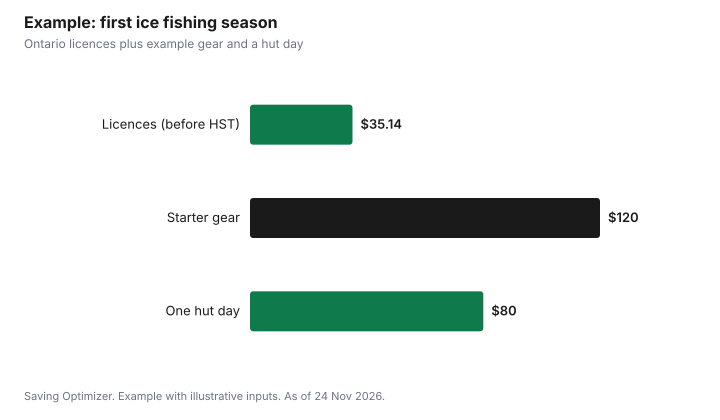

Sports · Canada
Ice Fishing on a Budget: A Canadian Cost Guide

Ice fishing can be a cheap winter hobby if you start small. In Ontario, residents need an Outdoors Card ($8.57) and a one-year sport fishing licence ($26.57), or a 1-day licence ($12.21) to try it, before HST. A short rod, a scoop, ice picks and a borrowed or hand auger are enough to start. Rent a heated hut instead of buying a shelter, and always check ice conditions.
Key takeaways
- Ontario 2026 fees before HST: Outdoors Card $8.57, one-year sport licence $26.57, conservation licence $15.07, 1-day sport licence $12.21 (checked 24 Nov 2026).
- Ontario's winter Family Fishing Weekend, over Family Day weekend, lets residents fish without a licence. Check the dates on ontario.ca.
- Start with short rods, a scoop, a bucket, ice picks and cleats. Borrow an auger at first.
- Renting a heated hut costs less than buying a shelter and heater for a few trips.
- Never go alone, and check ice thickness. Ice is never 100% safe.
Licences
| Licence | Fee |
|---|---|
| Outdoors Card | $8.57 |
| One-year sport fishing licence | $26.57 |
| One-year conservation licence | $15.07 |
| Three-year sport fishing licence | $79.71 |
| 1-day sport fishing licence (no Outdoors Card needed) | $12.21 |
Our Ontario fishing licence guide explains the Outdoors Card and exemptions. Other provinces set their own fees.
Starter gear
- Two short ice rods with reels.
- Hooks, jigs, a few lures and line.
- A hand auger, or borrow a power auger.
- An ice scoop and a bucket to sit on.
- Ice picks around your neck, cleats and warm layers.
Huts and shelters
Many operators rent heated huts by the day, sometimes with gear and holes drilled. For a few trips a year, renting is cheaper than buying a shelter, heater and power auger.
Ice safety
- Check local ice reports and ask the operator.
- Clear blue ice is strongest; white or grey ice is weaker.
- Never go alone, and tell someone your plan.
- Carry ice picks and a rope.
- Avoid pressure ridges, river mouths and moving water.
Plan: an example first season
These are example prices except the licences. Outdoors Card and one-year licence: $35.14 before HST. Gear: two rods, tackle, scoop and picks, an example $120. One day in a rented hut: an example $80.

First season: about $35 + $120 + $80 = $235. Fishing on the Family Fishing Weekend and borrowing an auger keeps it low.
Sources
- Ontario Ministry of Natural Resources, Hunt and Fish Ontario, Licence Fees (2026 fishing licence fees), checked 24 Nov 2026.
- Ontario, Family Fishing Weekends (licence-free fishing for residents), checked 24 Nov 2026.
- Canadian Red Cross, ice safety guidance, checked 24 Nov 2026.
Frequently asked questions
How much is a fishing licence for ice fishing in Ontario?
In 2026, residents pay $8.57 for an Outdoors Card plus $26.57 for a one-year sport licence, before HST. A 1-day sport licence costs $12.21 and doesn't need an Outdoors Card.
Is there a free fishing weekend in winter?
Ontario holds a winter Family Fishing Weekend over Family Day weekend when residents can fish without a licence. Check dates on ontario.ca.
What gear do I need to start ice fishing?
Short rods, tackle, an auger, a scoop, a bucket, ice picks, cleats and warm layers.
Should I rent an ice fishing hut?
For a few trips a year, renting a heated hut is cheaper than buying a shelter and heater.
How thick does ice need to be?
Follow local guidance and ice reports. Thickness alone doesn't make ice safe; never go alone.
Researched and drafted with AI assistance and fact-checked against official Canadian sources. How we create content.
Note: Licence fees are Ontario's 2026 resident fees; gear and hut prices are examples. Education only.